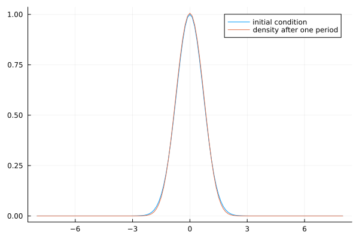
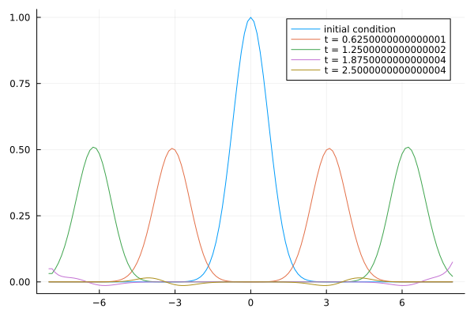

Google Summer of Code
Here I will document work done in fulfillment of the project NumFocus & SciML, PDEs on Graphs.
This work was meant to encapsulate 3 related efforts:
- Implement staggered grid discretization inside
MethodOfLines.jl - Pathfind for integration of
FENICS.jlandDolphinX - Leverage those toolsets to create an accessible and lightweight backed for solving PDEs on networks.
The effort to stand up staggered grid discretizations (correctly) was a much longer PR than originally anticipated, and thus the summer 2023 was mainly spent learning symbolic programming, and staggered numerical methods before implementing the discretization backend. The majority of the work is captured in this MethodOfLines.jl pull request
Introduction
The main idea of MethodOfLines.jl is to give the user a high-level interface to discretization and solution of PDEs. This is accomplished through “smart” choices of spatial discretization, and corresponding time integrators from DifferentialEquations.jl.
The spatial discretization (before the implementation of staggered grids) assumed all dependent variables were evaluated at the same spatial locations, even so, much work went into building the infrastructure of so-called DifferentialDiscretizers. These stencils translate between spatial derivatives and finite differences.
Importantly, MethodOfLines.jl is a package whose output is a symbolic system of ODEs for spatial discretized dependent variables.
Symbolic Programming
All of the symbolics code utilizes code from Symbolics.jl and SymbolicUtils.jl.
To do justice to symbolic programming would take too long for this post, the SymbolicUtils homepage has a nice introduction to what can be done using symbolics in Julia, but applications are far-reaching. Stated generally, symbolic programming (in Julia) generates Julia code, which can then be compiled, further simplified, etc.
Staggered Discretization
Staggered grids are known to work very well for advection-dominated PDEs, e.g., allowing for 2nd order derivatives with 1st order cost. Building the functionality into MethodOfLines.jl adds an additional tool in their expansive toolbox.
I was able to leverage much existing functionality, and needed only add specialized methods for particular pieces of the system-constructing algorithm.
Numerical Examples
To illustrate the results, we solve the wave equation, written as a first-order system, handling two cases: reflecting and transparent boundary conditions. The solution to the wave equation consists of two counter-propagating waves. In the reflecting case they will reflect from the boundary and rejoin, while in the transparent case, they will each “pass through” the boundary (besides a small numerical reflection).
 Reflecting Boundary Conditions
 Transparent Boundary Conditions